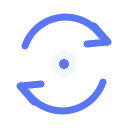

Gravity logo concepts
Ten transparent SVG marks, previewed on the app’s dark surface. Each file is independently editable.
01 · Singularity
02 · Orbit prompt
03 · Gravity well
04 · Dual orbit
05 · Terminal horizon

06 · Switch orbit
07 · Geometric G
08 · Well and cursor
09 · Profile constellation
10 · Gravity core